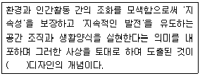
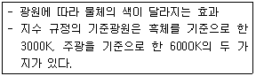

컬러리스트산업기사 (2006-03-05 기출문제)
1과목: 색채심리
1. 다음 제시된 사례 중 색채의 공감각적인 측면을 활용한 사례로 가장 적절하지 않은 것은?
- 바나나가 들어간 아이스크림의 노란색 포장지
- 오렌지 성분이 들어간 목욕용품의 주황색 포장지
- 장미향이 나는 향수의 분홍색 액체
- 자연보호를 위한 세제의 녹색 포장지
(정답률: 알수없음)

2. SD법에 대한 설명으로 잘못된 것은?
- 주로 반대어를 사용하여 감정을 다루는 것이다.
- Semantic Differential method 의 약자이다.
- 두 개의 색채를 사용하여 선호도를 조사하는 것이다.
- 이미지 맵과 이미지 프로필로 결과를 볼 수 있다.
(정답률: 알수없음)
3. 병원의 조명에 관한 사항 중 틀린 것은?
- 백열등은 황당 기운이 있는 환자의 피부색을 알아보지 못하게 할 수 있다.
- 약간 어두운 조명과 시원한 색은 휴식을 요하는 환자에게 적합하다.
- 신생아실은 관찰을 위해 조도의 높은 연속조명이 필요하다.
- 대기실이나 복도는 700Lux 정도의 조도가 필요하다.
(정답률: 알수없음)
4. 제품개발 후 패키지의 색채를 결정하려고 한다. 성인의 선호도 1위의 색으로 성별과 국가의 차별이 없이 가장 일반적인 패키지의 색으로 선정하기에 가장 적합한 것은?
- 빨강
- 파랑
- 녹색
- 회색
(정답률: 50%)
5. 다음 중 Blue-green, green, Blue-gray, white와 같은 색채에서 느껴지는 맛은?
- 단맛
- 쓴맛
- 신맛
- 짠맛
(정답률: 알수없음)
6. 형태가 지닌 이미지와 색채 이미지가 서로 부합될 때 보다 효과적인 디자인을 얻을 수 있다. 요하네스 잇텐(Johanness ltten)의 형태와 색채에 관한 연구에서 적절한 관계는?
- 사다리꼴 - 보라
- 삼각형 - 노랑
- 원형 - 빨강
- 타원 - 녹색
(정답률: 알수없음)
7. 색채선호의 원리에 대한 설명으로 옳은 것은?
- 제품의 선호색은 고정되어 유행에 따라 변화하지 아니한다.
- 세계적으로 공통된 선호색의 1위의 빨간색이다.
- 일반적으로 선호경향과 제품 특징에 대한 선호색은 고정되어 있지 않다.
- 남성과 여성의 선호색은 비슷한 편이다.
(정답률: 알수없음)
8. 동적인 이미지를 표현하기 위하여 일반적으로 액티브웨어에 많이 활용되어지는 배색효과는?
- 유사색 배색
- 반복 배색
- 반대색 배색
- 동일색 배색
(정답률: 알수없음)
9. 파란색은 ( )을 연상시키며, 요하네스 잇텐에 의하면, ( )은 편안함과 안정을 대변하고 정신성을 상징한다. ( )안에 알맞은 것은?
- 수직선
- 수평선
- 원
- 삼각형
(정답률: 알수없음)
10. 다음 색에 대한 설명 중 잘못된 것은?
- 채도가 낮고 명도가 높은 색은 부드러워 보이지만 들떠 보인다.
- 난색계열은 더운 느낌이 들어 시간의 흐름이 길게 느껴진다.
- 고명도는 가볍게 느껴지는 반면에, 저명도는 무겁게 느껴진다.
- 연두색, 보라색은 중성색을 띄나 명도, 채도에 따라 난색 느낌을 주는 경우도 있다.
(정답률: 알수없음)
11. 다음 분리배색에 대한 설명 중 잘못된 것은?
- 문·스펜서의 조화 이론을 기본으로 한 배색이다.
- 색상과 톤이 비슷한 배색인 경우 두 색 사이에 컬러를 삽입하면 명쾌함을 준다.
- 교회 창문에 스테인드 글래스에서 이 기법을 많이 볼 수 있다.
- 세퍼레이션 컬러는 주로 무채색을 사용한다.
(정답률: 알수없음)
12. 2색 이상의 배색을 되풀이하여 일정한 질서에 따른 조화를 주는 방법으로 통일감과 융화성을 높여주는 배색 효과는?
- Accent
- Repetiton
- Gradation
- separation
(정답률: 알수없음)
13. 다음 중 유사한 색조를 활용한 배색으로 가장 적절한 것은?
- pale tone + bright tone
- bright tone + deep tone
- light grayish tone + vivid tone
- pale tone + dark tone
(정답률: 알수없음)
14. 실내색채계획 중 잘못된 것은?
- 소규모 실내에는 고채도의 색을 제안한다.
- 밝은 색은 위로, 어두운 색은 아래로 배색한다.
- 먼저 주조색을 정한 다음, 그 색과 조화되는 색을 적절한 비율로 선택한다.
- 휴식공간의 색채는 대비조화, 난색계열, 부드러운 톤이 좋다.
(정답률: 알수없음)
15. 다음 중 여러나라의 전통색채에 대한 설명으로 잘못된 것은?
- 라틴 아메리카는 저채도의 색채를 선호한다.
- 중국에서는 빨강에 대한 선호도가 크다.
- 이슬람 문화권에서는 녹색을 신성시한다.
- 북유럽의 선호색채는 한색계이다.
(정답률: 알수없음)
16. 다음 중 색채 심리를 이용한 배색 중 맞지 않는 것은?
- 자동차의 바깥부분에 따뜻한 색 계통을 칠하면 눈에 잘 띈다.
- 실내의 천장을 가장 밝게 하고, 중간부분을 윗벽보다 어둡게 하며, 바닥은 그보다 더 어둡게 한다.
- 백색, 회색, 흑색을 밝음 → 어두움 순서로 세로로 늘어놓고 바라보면 안정감이 있다.
- 맨홀 공사로 표지판을 세웠을 때 청록색이나 파란색계통의 차가운 색을 사용한다.
(정답률: 100%)
17. 단조로운 배색에 대조색을 조금 추가하여 전체 상태를 돋보이도록 구성하는 방법은?
- 반복배색 효과
- 강조배색 효과
- 톤배색 효과
- 연속배색 효과
(정답률: 알수없음)
18. 공장의 색채조절에 관한 내용으로 틀린 것은?
- 마음을 들뜨게 하거나 눈에 피로를 주는 강렬한 대비색은 피하는 것이 좋다.
- 위험한 부분은 주위를 집중시키고 식별이 잘 되는 색으로 한다.
- 바닥을 밝게 하여 실내를 안정되게 보이도록 한다.
- 좁은 면적을 시원하고 넓게 보이게 하려면 밝은 색을 적용해 준다.
(정답률: 알수없음)
19. 다음의 배색 방법 중 명시성을 높인 기능적 배색으로 볼 수 있는 것은 어느 것인가?
- 밝은 노랑과 검정의 대각선 줄무늬 도로교통표시
- 밝은 파랑과 초록을 이용한 자연보호 마크
- 진한 빨강과 밝은 분홍을 이용한 여성전용 휴게실 표시
- 어두운 회색 바탕에 검정색으로 쓴 추리소설 표시
(정답률: 알수없음)
20. 선호색에 대한 틀린 설명은?
- 나라마다 감각적인 변수가 다르다.
- 성별에 따라 다르다.
- 지역에 따라 차이가 있다.
- 한 가지 색상에 주로 편중된다.
(정답률: 알수없음)
2과목: 색채디자인
21. 시지각의 원리를 설명한 게슈탈트 요인이 아닌 것은?
- 유사성의 요인
- 인지성의 요인
- 폐쇄성의 요인
- 연속성의 요인
(정답률: 알수없음)
22. 다음 중 ( )안에 들어갈 용어는?

- 생태문화적
- 환경친화적
- 기술환경적
- 유기체적
(정답률: 알수없음)
23. 디자인은 목적하는 대상을 머리 속에 그려 그 이미지를 그대로 실현하는 행위이다. 디자인을 하는 데 있어서 가장 중요한 두 가지 목적을 연결한 것은?
- 사회성, 전통성
- 편리성, 창조성
- 경제성, 균일성
- 실용성, 심미성
(정답률: 알수없음)
24. 디자인의 조건을 하나의 집합체로 각 원리에서 가리키는 모든 조건을 하나의 통일체로 하는 것은?
- 합리성
- 질서성
- 경제성
- 심미성
(정답률: 알수없음)
25. 색채정보 수집방법 중 가장 많이 쓰는 연구 방법은?
- 전수조사법
- 표본조사법
- 패널연구법
- 실험 연구법
(정답률: 알수없음)
26. 다음은 색채 사용에 관한 일반적인 원칙과 효과이다. 가장 합리적으로 설명된 것은?
- 초등학교 저학년 학생들을 위한 학습공간에는 청색과 같은 한색을 사용하면 차분한 분위기가 연출되어 학습 효과를 높일 수 있다.
- 학교의 식당은 복숭아색과 같은 밝은 난색을 사용하면 즐거운 분위기가 연출되어 식욕을 돋구어 준다.
- 학교의 도서실과 교무실은 노랑 느낌의 장미색을 사용하면 두뇌의활동을 활발하게 만들어 업무의 능률이 올라간다.
- 학습하는 교실의 정면 벽은 깊은(deep) 색조나 밝은(light) 색조를 사용하면 색다른 공간감을 연출하여 집중력을 높일 수 있다.
(정답률: 알수없음)
27. 디자인에서 다양한 형태를 만들어내는 모든 조형의 기본 요소가 아닌 것은?
- 점
- 선
- 면
- 입체
(정답률: 알수없음)
28. 다음 배색에 대한 설명 중 틀린 것은?
- 동일색상 배색 : 5B 4.0/3.0과 5B 8.0/2.0을 배색
- 인접색상 배색 : 2.5G 8.0/4/0과 7.5G 8.0/4.0을 배색
- 톤온톤 배색 : 5R 8.0/3.0과 5R 3.0/2.0을 배색
- 톤인톤 배색 : 2.5YR 8.0/3.0과 2.5YR 4.0/2.0을 배색
(정답률: 알수없음)
29. 색채 관리(color management)의 구성 요소와 그 내용이 잘못 연결된 것은?
- 색채 계획화(planning) : 목표, 방향, 절차 설정
- 색채 조직화(organizing) : 직무명확, 적재적소적량
- 색채 조정화(coordination) : 이견과 대립 조정, 업무 분담, 팀워크 유지
- 색채 통제화(controlling) : 의사소통, 경영참여, 인센티브 부여
(정답률: 알수없음)
30. 단순한 기하학적 형태를 사용하며 이미지와 조형요소를 최소화하여 기본적인 구조로 환원시키고 원형이나 정육면체 등의 단일 입방체 사용과 단색 사용 등으로 단순함을 강조한 것은?
- 밥아트
- 옵아트
- 미니멀리즘
- 포스트모더니즘
(정답률: 알수없음)
31. 다음 중 패션디자인의 주요 요소와 거리가 먼 것은?
- 재질 (texture)
- 점증(gradation)
- 선(line)
- 색채(color)
(정답률: 알수없음)
32. 일러스트레이션에 대해 잘못 설명한 것은?
- 출판, 광고와 같은 인쇄매체를 통해 어떤 목적이나 내용을 효과적으로 전달하기 위한 그림이다.
- 사실주의와 초현실주의의 기법이 활용되고 있다.
- 심볼(symbol)과 사인(sign)도 일러스트레이션의 한 영역이다.
- 일러스트레이션을 통해 그 사회의 단면을 파악할 수 있다.
(정답률: 알수없음)
33. 피부색이 상아색이거나 우유빛을 띠며 볼에서 산호빛 붉은 기를 느낄 수 있고 볼이 쉽게 빨개지는 얼굴타입에 어울리는 머리색은?
- 밝은 색의 이미지를 주는 금발, 샴페인색, 황금색 띤 갈색, 갈색 등이 잘 어울린다.
- 파랑 띤 검정(블루블랙), 회색 띤 갈색, 청색 띤 자주의 한색계가 잘 어울린다.
- 황금블론드, 담갈색, 스트로베리, 붉은색 등 주로 따뜻한 색계열이 잘 어울린다.
- 회색 띤 블론드, 쥐색을 띠는 블론드와 갈색, 푸른색을 띠는 회색, 등의 차가운 색계열이 잘 어울린다.
(정답률: 알수없음)
34. 검정, 회색, 녹색의 조합이 대표적인 배색이었으며 주로 강렬한 색조와 단순한 디자인을 추구했던 1920년대의 디자인 사조는?
- 아르누보
- 아르데코
- 사실주의
- 키치
(정답률: 알수없음)
35. 색채수요의 상황과 색채 마케팅의 대응을 잘못 연결한 것은?
- 잠재적 색채수요 : 색채수요의 개발
- 불규칙한 색채수요 : 색채의 수요시기와 공급시기 일치
- 완전한 색채수요 : 색채수요 유지
- 초과한 색채수요 : 색채 수요의 확대
(정답률: 알수없음)
36. 다음 중 색채를 적용할 대상을 검통할 때 고려해야 할 조건으로 가장 거리가 먼 것은?
- 면적효과(scale) - 대상이 차지하는 면적
- 거리감(distance) - 대상과 보는 사람과의 거리
- 재질감(texture) - 대상의 표면질
- 조명조건 - 자연광, 인공 조명의 구분 및 그 종류와 조도
(정답률: 알수없음)
37. 모든 제품 디자인에 있어서 유행은 매우 중요한 요인으로 특히 새로운 것을 추구하는 유행의 속성이 적용되고 보편화 될 때 유행색이 정착하게 된다. 이러한 유행색의 속성에 대한 설명으로 맞는 것은?
- 일정 계절이나 기간 동안 특별히 많은 사람들이 선호하여 착용하는 색
- 특정한 사회적, 경제적인 사건에는 많은 영향을 받지 않는 색
- 일정 기간만 나타나고 주기를 갖지 않은 색
- 패션, 자동차, 인테리어 분야에 동일하게 모두 적용되는 색
(정답률: 알수없음)
38. 색채조절의 목적이 아닌 것은?
- 능률성과 생산성을 높일 수 있다.
- 사고 재해를 감소시킬 수 있다.
- 생활에 활력소를 줄 수 있다.
- 사회적 부를 과시할 수 있다.
(정답률: 알수없음)
39. 색채계획에 관한 설명 중 가장 적합하지 않은 것은?
- 광고의 컬러는 광고내용, 즉 광고메시지를 잘 전달해야 한다.
- 제품의 컬러는 지나친 장식을 피하고 기능과 목적에 충실해야 한다.
- 포장의 컬러는 소비자 구매의욕을 자극하고 디스플레이 효과를 고려해야 한다.
- 환경의 컬러는 각각의 요소를 드러나게 해서 단조로움을 피해야 한다.
(정답률: 알수없음)
40. 아르누보 양식에서 가장 독창적이고 화려한 장식을 사용한 스페인의 건축가는?
- 미스 반데로에
- 안토니오 가우디
- 루이스 칸
- 후랑크 로이드 라이트
(정답률: 알수없음)
3과목: 섹채관리
41. 디지털 색채에 대한 설명 중 옳은 것은?
- 디지털 색채의 기본색은 시안(cyan), 마젠타(magenta), 블랙(black)이다.
- 디지털 색채 영상을 구성하는 최소 단위는 픽쳐(picture)이다.
- 해상도는 모니터의 크기가 커질수록 선명도가 떨어진다.
- 24비트로 된 한 화소가 나타낼 수 있는 색상의 종류는 1,572,864이다. (=256*256*24)
(정답률: 알수없음)
42. 자동배색장치의 기본원리로서 일정한 두께를 가진 발색층에서 감법혼색을 하는 경우에 성립하는 원리는?
- 그라스만의 법칙
- 베버와 페히너의 법칙
- 애덤스-니커슨의 색차식
- 쿠벨카 문크 이론
(정답률: 알수없음)
43. 금속감이 없는 솔리드그레이와 알루미늄 가루가 섞인 도장된 메탈릭실버의 광택을 측정하기 위한 가장 좋은 방법은?
- 시료면의 변각 광도분포 조사
- 시료면의 경면 광택도 조사
- 시료면의 대비 광택도 조사
- 시료면의 선명도 광택도 조사
(정답률: 50%)
44. 넓은 색역을 확보하는 감법혼색의 주색은?
- 빨강(R), 파랑(B), 옐로우(Y)
- 빨강(R), 파랑(B), 시안(C)
- 마젠타(M), 옐로우(Y), 녹색(G)
- 마젠타(M), 옐로우(Y), 시안(C)
(정답률: 알수없음)
45. 시료색 자극의 특정 무채색 자극(백색 자극)에서의 색도차와 휘도의 곱을 무엇이라고 하는가?
- 텍스쳐
- 크로미넌스
- 컬러어피어런스
- 플리커
(정답률: 알수없음)
46. 가시광선에 대한 설명으로 틀린 것은?
- 눈으로 볼 수 있는 빛의 범위를 말한다.
- 파장의 길이에 따라 보라색에서 붉은색의 빛깔을 띈다.
- 가시광선 중 780nm부근은 보라색을 띈다.
- 적외선은 가시광선보다 파장이 길다.
(정답률: 알수없음)
47. CCM(Computer Color Matching)의 특징으로 적당치 않은 것은?
- 소재의 변화에 신속히 대응하는데 도움을 준다.
- 조색시간을 단축할 수 있다.
- 다품종 소량생산에는 불리하지만 소품종 대량생산의 효율을 높이는데는 유리하다.
- CCM 소프트웨어는 Quality Control 부분과 Formulation 부분으로 구성되어 있다.
(정답률: 알수없음)
48. 분광반사율이 다른 2개의 물체(시료)가 어떤 특정한 빛으로 조명하였을 때 같은 색자극을 일으키는 현상은?
- 메타메리즘
- 연색성
- 컬러 어피어런스
- 착시 현상
(정답률: 알수없음)
49. 다음은 일반적인 색료(色料)에 관한 설명이다. 맞지 않은 것은?
- 색료는 가시광선을 흡수하는 성질을 갖고 있다.
- 안료는 유기안료와 무기안료로 나눌 수 있다.
- 안료는 착색하고자 하는 매질에 모두 용해된다.
- 염료는 침염에 많이 사용된다.
(정답률: 알수없음)
50. 육안검색 측정조건에 대한 설명 중 맞는 것은?
- 관찰자와 대상물의 각도는 30도로 한다.
- 비교하는 색은 인접하여 배열하고 동일 평면으로 배열 되도록 배치한다.
- 기본 조도는 300Lux이상으로 한다.
- 먼셀명도 3이하의 어두운 색을 검사할 경우 1000Lux이상으로 한다.
(정답률: 알수없음)
51. 디지털 색채와 관련된 다음 설명 중 맞는 것은?
- 픽셀(pixel)의 물리적 크기는 선택된 해상도에 라 변하는 것은 아니다.
- 10ppi는 10인치당 10개의 픽셀(pixel)을 가짐을 뜻한다.
- 이미지가 디지털로 1비트의 깊이로 스캔되면, 흑과 백 외에 1가지의 회색톤을 더 가질 수 있다.
- 해상도는 데이터의 전체 용량과는 직접적인 관계가 없다.
(정답률: 알수없음)
52. 점광원이 일정 방향으로 내는 에너지량을 말하며 칸델라(cd)를 단위로 하는 것은?
- 광도
- 색온도
- 조도
- 전광속
(정답률: 알수없음)
53. 다음 중 감법혼색의 원리가 적용되는 장치가 아닌 것은?
- toner printer
- offset press
- CRT monitor
- digital press
(정답률: 알수없음)
54. 색채 영상의 입력에 활용되는 디바이스인 디지털 칼메라, 스캐너 등의 가장 기본이 되는 요소는?
- CCD(charge coupled device)
- CRT(cathode ray tube)
- LCD(liquid crystal display)
- DTP(desk top publishing)
(정답률: 알수없음)
55. 어떤 색채가 매체, 주변색, 광원, 조도 등이 서로 다른 환경 하에서 관찰될 때, 다르게 보이는 현상을 무엇이라 하는가?
- 컬러 어피어런스 현상
- 푸르키니에 현상
- 크로미넌스
- 메타메리즘
(정답률: 알수없음)
56. 다음은 무엇에 대한 설명인가?

- 아이소머리즘(Isomerism)
- 컬러어피어런스(Color apperance)
- 색채불일치
- 색의 연색성
(정답률: 알수없음)
57. 자외선을 흡수하여 일정한 파장의 가시광선을 형광으로서 발하게 하는 성질을 이용하여 종이, 합성수지, 펄프, 양모 등의 백색도를 높게 하기 위하여 사용되는 염료는?
- 합성염료
- 식용염료
- 천연염료
- 형광염료
(정답률: 알수없음)
58. 다음 중 색온도가 가장 높은 완전복사체의 광원색은?
- 주황색
- 빨강색
- 노랑색
- 청백색
(정답률: 알수없음)
59. 색 측정용 분광광도계의 구성요소(색측정 체계)가 아닌 것은?
- 광원
- 빛을 분광시키는 장치
- 컬러매칭 삼중필터
- 신호처리장치
(정답률: 60%)
60. 다음은 색채측정기에 대해 설명한 것이다. 옳은 것은?
- 색채측정기에는 필터식, 분광식, 필터분광식, 스펙트럼식 4종류가 있다.
- 필터식 색채측정기는 일반적으로 고가이며, 다루기 힘들다.
- 분광식 색채측정기는 다양한 광원과 시야에서의 색채값을 측정할 수 있다.
- 분광식 색채측정기보다 필터식 색채측정기를 자동배색장치로 많이 사용한다.
(정답률: 알수없음)
4과목: 색채지각의이해
61. 다음 중 채도 대비의 특징에 관한 설명 중 잘못된 것은?
- 채도가 낮은 색은 더욱 낮게, 채도가 높은 색은 더욱 높게 보인다.
- 색상대비가 일어나지 않는 무채색의 대비에서는 채도대비가 일어나지 않는다.
- 무채색 위의 유채색은 채도가 높아 보이고, 채도가 높은 색 위의 낮은 채도의 색은 채도가 더 낮아 보인다.
- 빨강의 배경에서 분홍색은 채도가 높게 보이고, 회색의 배경에서는 채도가 낮게 보인다.
(정답률: 알수없음)
62. 문양이나 선의 색이 배경색에 영향을 주어 원래의 색과 다르게 보이는 현상은?
- 베졸트
- 잔상
- 푸르킨예
- 할레이션
(정답률: 알수없음)
63. 무대에서는 두 개 이상의 색광을 동일지점에 겹쳐 비춰줌으로써 혼합색을 만들어낸다. 이러한 혼색방법은 다음 중 어디에 속하는가?
- 계시혼색
- 동시혼색
- 순차혼색
- 병치혼색
(정답률: 알수없음)
64. 외측슬상핵이나 선조피질에서 나타나는 현상과 관계있는 색채이론은?
- 영ㆍ헬름홀쯔 - 삼원색이론
- 영ㆍ헬름홀쯔 - 대립과정이론
- 헤링 - 대립과정이론
- 헤링 - 삼원색이론
(정답률: 알수없음)
65. 다음 중 계시대비에 대한 설명으로 잘못된 것은?
- 계시대비는 먼저 본 색의 영향으로 다음에 본 색이 다르게 보이는 것을 말한다.
- 계시대비는 동시대비의 일정으로 인접색의 영향을 받는다.
- 잔상과 구별하기 힘들다.
- 순간 다른 색상으로 보였다고 할지라도 일시적인 것이므로 시간이 지나면 원래색으로 보인다.
(정답률: 알수없음)
66. 파랑색 불빛 아래서 어두운 회색을 보면 어떤 색으로 보이겠는가?
- 정확한 회색
- 노랑 기미를 띈 회색
- 주황 기미를 띈 회색
- 노랑 기미를 띈 흰색
(정답률: 알수없음)
67. 주목성에 대한 설명 중 잘못된 것은?
- 주로 위험표지나 공사장 표시 등에 쓰인다.
- 파스텔톤의 색은 명도가 높으므로 주목성이 높다.
- 색자체가 주목성이 높더라도 배경색에 따라 눈에 띄지 않을 수도 있다.
- 일반적으로 난색이 한색보다 주목성이 높다.
(정답률: 알수없음)
68. 다음 중 인간이 안료의 색을 지각할 때 영향을 주는 요인과 가장 거리가 먼 것은?
- 색의 크기
- 조명
- 색의 잔상
- 주변 환경
(정답률: 알수없음)
69. 다음 색 중 가장 차갑게 느껴지는 색은?
- 빨강
- 주황
- 노랑
- 파랑
(정답률: 85%)
70. 물체로부터 여러 가지 파장이 고르게 반사될 때 그 물체는 다음 중 어느 색으로 지각되는가?
- 무채색
- 녹색
- 파랑색
- 빨강색
(정답률: 알수없음)
71. 서로 다른 두 가지 색이 어떤 특수한 조건의 광원에서는 같은 색으로, 다른 광원에서는 각각 다른 색으로 나타나는 현상은?
- 조건등색
- 색채적응
- 광원의 연색성
- 색채의 항상성
(정답률: 알수없음)
72. 다음 중 팽창색과 수축색에 대한 설명으로 틀린 것은?
- 따뜻한 색은 외부로 확산하려는 팽창색이다.
- 명도가 높은 색은 외부로 위축되려는 수축색이다.
- 차가운 색은 내부로 위축되려는 수축색이다.
- 색채가 실제의 면적보다 작게 느껴질 때 수축색이다.
(정답률: 알수없음)
73. 회전원판을 같은 면적의 비율로 빨강과 파랑의 두 색을 놓고 회전시켰을 때 혼합된 색채로 가장 가까운 것은?
- 저채도의 남색이 된다.
- 고채도의 연지색이 된다.
- 두 색의 중간 색상, 명도, 채도가 된다.
- 두 색의 보색인 청록과 노랑의 영향으로 회색이 된다.
(정답률: 알수없음)
74. 보색에 대한 설명으로 맞는 것은?
- 보색이 인접하면 채도가 서로 낮아 보인다.
- 보색을 혼합하면 중간회색이나 검정이 된다.
- 빨강의 보색은 보라이다.
- 보색잔상은 인접한 두 보색을 동시에 볼 때 생긴다.
(정답률: 알수없음)
75. 흥분, 침정과 같은 색채의 감정적인 효과는 다음 중 주로 어떤 속성과 관계되는가?
- 색상
- 명도
- 채도
- 온도감
(정답률: 알수없음)
76. 푸르킨예 현상에 대한 설명 및 적용이 잘못된 것은?
- 추상체에서 간상체로 이동할 때 생기는 현상이다.
- 파장이 긴 색이 먼저 사라지고 파장이 짧은 색이 나중에 사라진다.
- 새벽이나 초저녁에 물체가 푸르스름하게 보이는 것은 이 현상 때문이다.
- 야간 작업시 주목성을 높이기 위해서 주황색 안전모를 착용한다.
(정답률: 알수없음)
77. 다음 중 눈의 구조에 대한 설명으로 옳은 것은?
- 빛의 신경정보로 전환되는 부분은 맹점에 있다.
- 간상체는 추상체에 비하여 해상도가 떨어지지만, 빛에는 더 민감하다.
- 빛 에너지가 전기화학적인 에너지로 변환되기 위해서는 수정체의 굴절도가 중요하다.
- 주변 망막에는 추상체가 훨씬 많이 분포한다.
(정답률: 알수없음)
78. 다음 중 특성이 다른 것은?
- 동화현상
- 대비현상
- 베졸드효과
- 줄눈효과
(정답률: 알수없음)
79. 색료의 삼원색인 시안(cyan)과 마젠타(magenta)를 혼합했을 때의 색은?
- green
- orange
- red
- blue
(정답률: 알수없음)
80. 눈의 망막에 위치하는 광수용기 중 밤이나 어두운 곳에서 주로 동작하는 것은?
- 간상체
- 양극세포
- 파보세포
- 추상체
(정답률: 알수없음)
5과목: 색채체계의이해
81. 비렌의 색삼각형에 의한 색채 조화론 중 레오나르도 다빈치에 의해 시도되었고, 음영계열(Shadow Series) 혹은 명암법이라고도 불리우는 방법은?
- 흰색 - 회색 - 검정에 의한 조화
- 순색 - 명색조 - 흰색에 의한 조화
- 명색조 - 톤 - 암색조에 의한 조화
- 순색 - 암색조 - 검정에 의한 조화
(정답률: 알수없음)
82. 색의 물리적인 혼합을 회전 혼색판으로 실험, 규명하여 노벨상을 받았으며 측색학의 아버지라고 불리우는 사람은?
- 뉴턴
- 오스트발트
- 맥스웰
- 해리스
(정답률: 알수없음)
83. 배색을 할 때 색이나 형태, 질감 등에 공통되는 조건을 조정하여 전체에 통일감을 주는 원리를 무엇이라 하는가?
- 강조의 원리
- 주조의 원리
- 연속변화 원리
- 분리의 원리
(정답률: 알수없음)
84. 먼셀 색채조화론의 균형원리와 가장 관계가 깊은 것은?
- N0
- N3
- N5
- N8
(정답률: 알수없음)
85. 여러 가지 색체계 중 감성전달의 정확성이 가장 높은 것은?
- CIE LAB
- 먼셀체계
- ISCC-NBS 색명체계
- 오스트발트체계
(정답률: 알수없음)
86. 먼셀 기호로 표시할 때 5Y8/10 의 설명으로 올바른 것은?
- 색상 5Y, 명도 8, 채도 10
- 색상 Y8, 명도 10, 채도 5
- 명도 5, 색상 Y8, 채도 10
- 색상 5Y, 채도 8, 명도 10
(정답률: 알수없음)
87. 산업자원부 기술표준원에서 2003년 12월 개정된 KS A 0011물체색의 색이름의 계통색 중 유채색의 수식 형용사에 속하지 않는 것은?
- 흐린
- 탁한
- 해맑은
- 어두운
(정답률: 59%)
88. 다음 NCS 색채 표기 중, 30%의 파란색도와 40%의 검정색도, 50%의 유채색도를 가진 색상은 어느 것인가?
- S5040-B30G
- S4⑤0-R30B
- S3040-R50B
- S4⑤0-B30G
(정답률: 알수없음)
89. 색채 표준 검사환경에서 가장 적합한 관찰자의 시야각도는?
- 5° , 7°
- 2° , 10°
- 2° , 5°
- 7° , 10°
(정답률: 알수없음)
90. 먼셀 표색계에 대한 설명 중 맞는 것은?
- 무채색은 20개의 명도 단위로 나누어져 있다.
- 색상은 24색상환으로 구성되어있다.
- 채도는 모든 색이 14가 최고 수치이다.
- 색입체의 중심축은 명도로 되어 있다.
(정답률: 알수없음)
91. 다음 중 CIE 표색계의 설명이 아닌 것은?
- 이 표색계는 광원색(光源色)을 포함하는 모든 색을 나타낸다.
- 적당한 번호나 기호를 붙여서 물체의 색채를 표시하는 체계이다.
- 인간의 감각에 의존하지 않는 과학적인 표색법
- 분광광도계(分光光度計)에 의한 측정값을 기초로 하고 있다.
(정답률: 알수없음)
92. 혼색계(Color Mixing System)에 대한 설명으로 옳은 것은?
- 색채의 삼속성 즉, 색상 명도 채도에 따라 색을 분류 한다.
- 인간의 시감각을 중심으로 배열되었다.
- 색을 측색하여 기기를 통하여 기록하는 색체계이다.
- Munsell, NCS 체계가 대표적이다.
(정답률: 알수없음)
93. 한국 전통색에 대한 설명으로 틀린 것은?
- 오정색은 각각 방향을 의미하고 있어 오방색이라고도 한다.
- 오정색은 음에 해당하며 오간색은 양에 해당된다.
- 오간색은 오방색을 합쳐 생겨난 중간색이다.
- 음양오행사상을 표현하는 상징적 의미의 표현수단이다.
(정답률: 알수없음)
94. 다음 중 문ㆍ스펜서의 색채 조화론에서 조화의 배색이 아닌 것은?
- 동일조화
- 질서조화
- 유사조화
- 대비조화
(정답률: 알수없음)
95. 오스트발트 체계에서 색상번호 1번은 어떤 색 영역을 나타내는가?
- Red
- Yellow
- Orange
- Leaf Green
(정답률: 알수없음)
96. 먼셀이 고안한 색체계의 가장 큰 특징은?
- 시각적 등보성에 따른 감각적인 색체계를 구성 하였다.
- 가장 객관적인 체계로 모든 사람의 감성과 일치한다.
- 색의 순도에 대한 연구로 완전색을 규명하였다.
- 스펙트럼을 규명하고 이에 따른 원형배열을 하였다.
(정답률: 알수없음)
97. CIE LAB 색공간에서 밝기를 나타내는 L값과 같은 의미를 지니고 있는 CIE XYZ 색공간에서의 값은?
- X
- Y
- Z
- X+Y+Z
(정답률: 알수없음)
98. 색채의 표준화를 연구하여 흑색량(B), 백색량(W), 순색량(C)을 근거로, 모든 색을 B+W+C=100 이라는 혼합비를 통해 체계화한 색체계는?
- 먼셀 표색계
- NCS 표색계
- 오스트발트 표색계
- P.C.C.S. 표색계
(정답률: 알수없음)
99. 다음 중 계통색명은?
- 풀색
- 짙은 녹색
- 무지개색
- 살색
(정답률: 알수없음)
100. 광원의 색이름을 수량화하여 나타내기 위해 가장 적합한 색체계는?
- ISCC-NBS
- L*a*b*
- Munsell
- Yxy
(정답률: 알수없음)